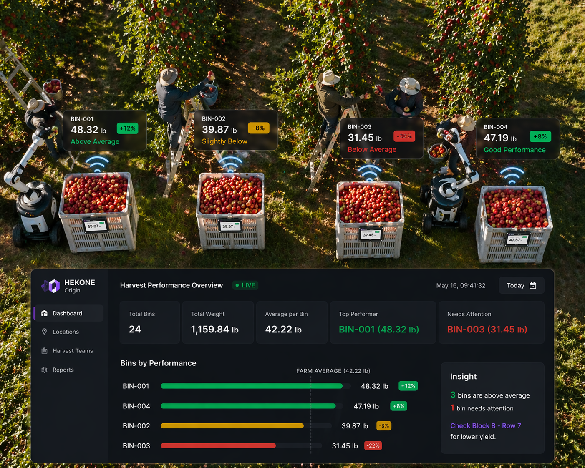

HEKONE Origin
Smart Harvest & Source Capture for real-time visibility, lower labor dependency, and measurable field ROI.
HEKONE Origin captures weight, time, and harvest location at the point where material enters the system. Instead of relying on delayed measurement, growers gain live operational data directly from the field.
The commercial outcome is sharper: fewer handling steps, faster field decisions, lower labor burden, better accountability, and a clearer path to measurable ROI.

Capture harvest data at the moment of collection instead of later at a separate weighing step.
Designed to remove a weighing checkpoint and reduce extra bin handling in the harvest flow.
Structured for phased deployment, starting with targeted high-value zones before broader rollout.
Built to validate labor reduction, faster decisions, and stronger yield visibility in pilot use.
Reduction in labor touches tied to separate weighing and re-handling steps.
Faster harvest flow by removing queueing and manual recording around weighing.
Field-ready enclosure target for dust, splashing water, and repeated outdoor handling.
Goal is to validate measurable operational ROI within the first harvest cycle or pilot period.
The figures above are deployment targets for pilot validation and are intended to frame expected impact, not final field-certified performance claims.
Eliminate the weighing step.
Replace a slower multi-step harvest flow with direct measurement at the moment of harvest — reducing labor, delay, and operational friction while improving visibility in real time.
Instead of moving material through an added weighing checkpoint, HEKONE Origin captures data where harvest already happens. That means fewer handoffs, faster information, and less delay between collection and decision.

Removes manual weigh-station dependency and reduces process interruption in the harvest chain.
Targeted reduction in extra handling tied to weighing, moving, and manual entry.
Expected improvement in cycle speed by reducing queueing and delayed data capture.
Integrates at the point of harvest instead of requiring crews to adapt to an added station step.
Start with the bin. Build visibility across the orchard.
HEKONE Origin begins with a smart harvest bin that measures filled weight in the field and sends it to a live system without waiting for a later weighing step.
The bin is the entry point, but the bigger value is what it unlocks: structured field data, operational awareness, and measurable visibility at the source.
See harvest activity across the orchard — as it happens.
Instead of waiting for delayed reports, teams can monitor where bins are located, how much each bin contains, and which areas are outperforming or falling behind.
Connectivity can vary in field environments, so the system is designed around practical deployment logic: capture locally, sync reliably, and preserve operational visibility even when connectivity is inconsistent.

This is not just real-time when the network is perfect. It is intended to be operationally reliable in the kinds of field conditions operators actually deal with.
Compare bins in real time and identify where output is stronger or weaker.
Not every harvest zone performs the same way. HEKONE Origin can help visualize which bins are filling faster, which are lagging, and where attention may be needed.
This is not just about seeing activity. It is about understanding where labor efficiency, harvest timing, or yield performance may be drifting so teams can respond earlier.

Detect unexpected bin changes and flag activity that may need attention.
When bin weight drops unexpectedly, HEKONE Origin can surface the event immediately and give operators a clear signal that something needs to be checked.
This moves the system beyond passive measurement into active operational awareness, helping teams respond faster when shrinkage, handling issues, or irregular movement may be happening in the field.

Real-time alerting can help reduce unnoticed loss, improve accountability, and make field events visible before they become larger operational or financial issues.
When a quality problem appears, trace it back to where it started.
Downstream quality issues are far more valuable when they can be linked back to the harvest area that produced them. HEKONE Origin helps connect the problem bin to its source location on the map.
That turns delayed discovery into a faster inspection path, helping teams focus attention where it is most likely needed.

Not just weighing. Not just tracking. A better operational data layer.
Many field operations already use some form of weighing, location tracking, or reporting. The gap is that those tools often remain disconnected from the moment the physical event actually happens.
- Delayed weighing after harvest activity has already moved on
- Location data without direct connection to measured field output
- Manual reporting that arrives too late for immediate response
- Visibility into movement, but limited visibility into source-side operational loss
- Measurement at the source, at the time the event happens
- Structured linkage between weight, time, and harvest location
- Real-time visibility that supports faster field decisions
- A clearer path to labor savings, faster response, and measurable ROI
Existing systems may record output later or track movement separately. HEKONE Origin turns the harvest event itself into immediate operational intelligence.
Built for practical deployment in real operating conditions.
Field technology has to work where operations are demanding — with dirt, handling, motion, weather exposure, and inconsistent connectivity.
HEKONE Origin is being developed for harsh field use, with a durability target aimed at dust protection, splash resistance, repeated handling, vibration, and daily outdoor exposure.
Real-time visibility matters, but reliability matters more. The system is intended to capture data at the edge and sync through a practical field connectivity model rather than assuming perfect continuous wireless coverage.
Adoption drops when harvest crews slow down. HEKONE Origin is designed to fit into the harvest process with minimal added steps and no separate weighing station dependency.
Large operations may have hundreds or thousands of bins. The deployment logic is to start where the labor, visibility, or quality value is highest, validate ROI, and expand based on measured operational gain.
Built to make field operations more measurable and actionable.
Real-Time Measurement
Capture weight at the point of collection instead of relying on delayed, centralized measurement.
Source Traceability
Link harvest bins to locations, rows, blocks, and field context for stronger source visibility.
Connected Visibility
Monitor bin status, harvest performance, and activity through a system built for practical field use.
Operational Alerting
Move from passive measurement to active awareness when unexpected activity or potential shrinkage appears.
A simple flow with a high-value outcome.
Capture
Measure harvest weight directly in the field at the point of origin.
Transmit
Store and sync live bin data with harvest time and location context.
Compare
See which bins, rows, or harvest zones are stronger, weaker, or inconsistent.
Trace & Act
When a quality issue appears, trace it back to source and guide inspection faster.
Operational visibility is only valuable if it improves economics.
HEKONE Origin is intended to improve not just field awareness, but operator outcomes: less labor friction, faster harvest flow, reduced handling, faster issue response, and stronger visibility into where performance may be slipping.
Targeted reduction in labor touches tied to weighing, extra movement, and manual data entry.
Expected cycle-time improvement by removing queueing and separate weigh-station handling.
Surface issues earlier so inspection, labor adjustment, or quality checks can happen sooner.
Designed to validate economic value within the first harvest cycle through measured pilot outcomes.
ROI figures shown here are target ranges for pilot validation and should be refined against live deployment data.
One product, one use case — but the same underlying data logic.
HEKONE Origin extends the same broader approach behind HEKONE: capturing physical events where they happen and turning them into structured, usable operational data.
Captures source-side field data during harvest and initial handling.
Captures output-side usage and dispensing data in physical environments.
Together, they point toward a larger system: visibility from source to consumption.
Looking for a pilot partner in agriculture or field operations.
We are exploring pilot opportunities with growers, agricultural operators, and partners interested in bringing live harvest visibility, source traceability, and faster field insight into real operations.
Pilot engagement is intended to validate deployment practicality, durability in field use, workflow fit, labor reduction, and measurable ROI in real operating conditions.